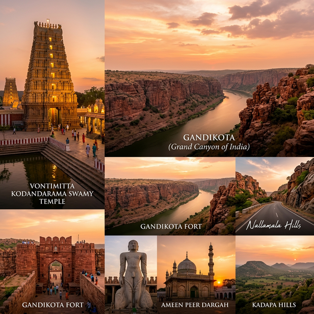

YSR Kadapa — Land of Heritage, Culture & Resilience
Kadapa, officially known as YSR Kadapa District, is one of the 26 districts of Andhra Pradesh, India. Located in the southeastern part of Rayalaseema region, it covers approximately 15,359 km² and is bordered by Kurnool, Nellore, Chittoor, and Prakasam districts.
The district has a rich historical legacy going back to the Vijayanagara Empire and Gandikota Sultanate. Today it is a major district known for its asbestos production, cement industries, and stunning natural landscapes including the famous Gandikota Gorge.

The region was part of the Satavahana kingdom and later ruled by the Pallavas. Inscriptions from 2nd century BC have been found here.
Kadapa flourished under the Vijayanagara Empire and later the Gandikota Sultanate. The legendary Pemmasani Nayaks ruled from Gandikota fort.
Post Independence, Kadapa became a key district of Andhra Pradesh. In 2021, it was renamed to YSR Kadapa in honor of the late Chief Minister Y.S. Rajasekhara Reddy.
Telugu is the primary language of Kadapa district. The dialect of Telugu spoken here — Rayalaseema Telugu — is famous for its unique flavor and richness. The people are known for their warmth, hospitality, and deep-rooted traditions.
Music, dance, literature and pilgrimage are deeply woven into the fabric of Kadapa's social life.